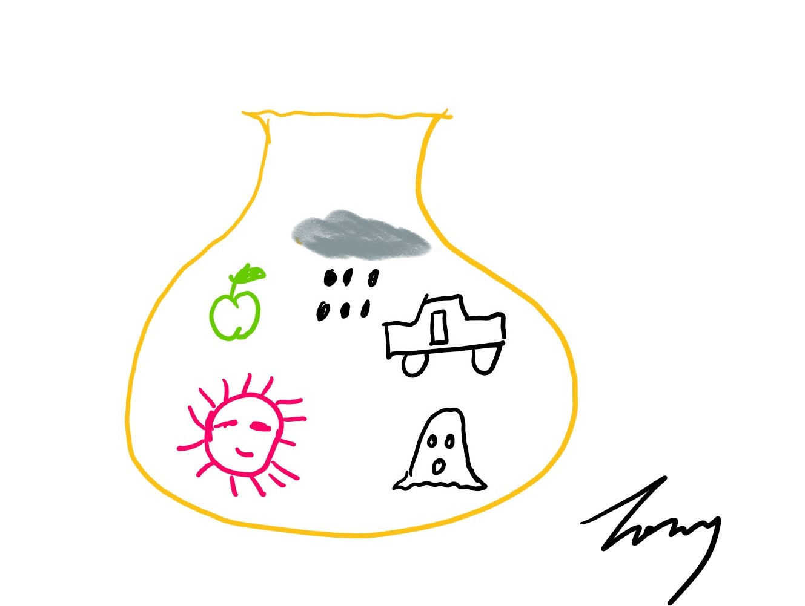
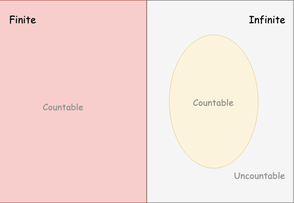

Sample Set
Keywords: set
Today, We are going to discuss a most fundamental concept of mathematics, of course, as well as of probability theory. It is set.
Thousands of years ago, our ancestors had been able to distinguish a single apple from a sack of apples. The single apple and the apples in the sack can be regarded as specific objects, that is, every apple can be identified among the ‘bunch’ of apples, and we can label them as , and these labels have:
However, the sack of apples also attracted the attention of human beings. It is known as the set.
Let’s see another example of a set. We, now, have an Incident Response Team that is made up of several Avengers, they are:
But one day, they found they need a more powerful guy to help them learn probability theory. So they invited me to their team, and then, the team became:
Aha, the team now is listed as:
Since we have two 'Tony’s now, and just according the list above, we can not tell which Tony is me and which one is Anthony Edward Stark(Iron Man).
The problem we came cross represented an essential property of set – there should not be duplicated in a set list. And we have a lot of methods to solve the duplicate-problem, for instance, we can list their family name at the same time, so they are
The same members cannot be counted twice in a set and the different members with the same name in the list are considered as the same one(We do not have other information to tell them apart). Although the duplicate-problem has been solved by adding a family name, the list of the set does not always work.
To represents a specific set, the list should be complete. However, most of the time, we are not able to list a set completely. Here are some examples, which can not list all members in the set and they look like:
- In geometry, we definite circle as: “The set of points which are equidistant from a given point”
- In algebra, “The set of integers which have no other divisors except 1 and itself” is called the set of prime numbers
These two sets seem impossible to be enumerated all elements.
In probability, the notion of set plays a more fundamental role. The notion of a set can also be divided into general kinds of sets as well as concrete ones. For the general things are always difficult to understand, we begin our probability theory with the easier concrete examples:
- a) A bushel of apples
- b) All Possible outcomes when six dice are rolled
- c) All student in the college
Then let’s look at the smaller ones:
- a’) The rotten apples in that bushel
- b’) The situation that six dice show a different face when six dice are rolled
- c’) The mathematics majors of that college
All the examples(a~c and a’~c’) are all sets. These examples and the Avengers’ example have an abstract common – they are all “a bunch of things”.
Sample point and Sample Space
The examples can help us know what is a set intuitively. However, we are mathematicians, and we should be more mathematical and more precise. A bunch of things can never be a formal definition. So we need to set up a mathematical model for a set.
Every signal thing(object, situation, result, e.t.c) in the bunch will be called a ‘point’. And the bunch of things is called a ‘space’. If you have learned linear algebra, you would be familiar with the word ‘space’. A space in linear algebra is made up of infinity vectors who obey some certain rules. For instance, in the example a), every apple is a point, and, of course, they are different from each other. And then the bushel of apples which contains all the apples is the space. In the same way, we can find the points in the other examples. And each of them is space. To distinguish the space in probability theory and in other situations, we prefix the space by sample. So does the point. They become sample space and sample point.
We use to denote the sample space, and the sample points in the sample space are denoted by . Every point can have a specific name, such that the set in the picture where I drew a sack of things.

Its mathematical model is:
Subset
Sets are made up of elements, in other word, spaces consist of points. When all the elements in a new set are all from another set , the set is the subset of . The sets in examples a’)~ c’) are subsets of examples a)~ c). Two extreme subsets are the biggest one – the set itself, and the smallest one – empty set which has nothing.
The empty set is a special case in set theory and it has its own donation
Size of Set
“The subset is smaller than the original set and the empty set is the smallest subset”, this description uses an undefined concept, the size of a set, which can be used to identify which one is bigger or smaller among two sets. The number of points in a set is called “size”, and it denotes as:
The size of
is
The size of
is
Properties of the Size
The size has several properties, and here are the most useful three:
- The size should be a non-negative integer
- The size can be infinity
- The size of the empty set is 0
By the way, the natural number can be defined by the size of the set. But that is not our business here.
Finity and Infinity sets
“Finity” and “infinity” are two general classifications of size. However “countable” and “uncountable” are another two distinct concepts. “Countable” is not equal to “finite”, while “Uncountable” is infinity.
Their precise relation is shown in the Venn Diagram

Definition of Countable/Uncountable: An infinite set is countable if there is a one-to-one correspondence between the elements of A and the set of natural numbers . A set is uncountable if it is neither finite nor countable. If we say that a set has at most countably many elements, we mean that the set is either finite or countable.[1]
The most common example of the set which is infinity but countable is the set of all odd numbers and the index of element can be calculated by:
Well Defined Set
All the sets above are defined by words. Although we have had a mathematical model, it’s also difficult to find a current method to define set rigidly. What the well-defined set means is that it is possible to tell whether a point belongs to the set or not.
Belong to
Belong to is a relation between point and space. We say “Iron Man” (point) belongs to the Avengers(space). It’s denoted as:
And “not belong to” is denoted as:
Define a Set
The first method that can define the set rigidly is “enumerate”, and we put all points in curly brackets. For example, rolling a six-face dice may get outcomes as:
Intuitively, rolling two different six-face dice may get outcomes:
As we can see, two different dice would produce outcomes, and then three different dice would produce outcomes. When we roll dice, we would get a set of size 46656. It is impossible to list all the combinations. However, we can solve this problem through a mathematical model:
This is a simple use of the mathematical expression. However, it does not always work, such as defining the set of all the girls in the world. Listing all the names of them is tedious and impossible, and this set is dynamic because girls are born and died at the present moment.
The second method to determine a set is through a specified rule of membership, however, there are always people who quibbled about the meaning of words. That is meaningless.
Subset, Superset, and Identical[2]
Subset has been explained above, but here we have an official definition:
If every point of belongs to , Then is contained or included in and is a subset of , and is the superset of
We can write this relation in two ways:
Two sets are identical if they contain exactly the same points, and then we write
By the way, a roundabout method to check whether two sets are identical is to chech: if and only if and . Although this roundabout way seems indirect, it might be the easiest way to investigate whether these two sets are identical.
Conclusion
This post is the first one of our series of Probability Theory. We talked about some concepts and properties of set and sample set. And the relationship between elements (also known as points) and space (also known as a set) and between set and another set. The subset is also a set, however, it is in a special position in probability theory. Without understanding the concept of subset, we might be confused in later discussion.